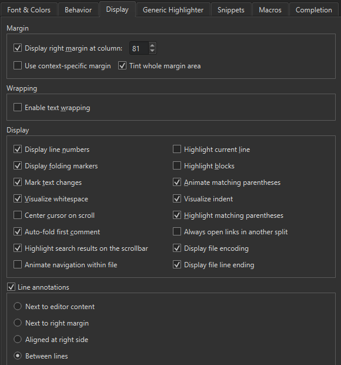

Move to symbols
The editor toolbar shows the symbol currently under the cursor (1).
By default, the list of symbols shows them in the order in which they appear in the file. Right-click the field and go to Sort Alphabetically to arrange the symbols in alphabetic order.
Use the locator, views, Window menu items, keyboard shortcuts, or editor toolbar, to navigate between symbols in open files.
Locate symbols
To jump to a symbol in the current file, activate the locator, enter a period (.) or colon (:), and start typing the symbol name. Then select the symbol in the list.
For example, to locate symbols matching QGuiApplication:
- Press Ctrl+K to activate the locator.
- Enter a colon (:) followed by a space and the upper case letters in the symbol name (here,
QGuiApplication):: qga
The locator lists the results.
Filters locating class and function definitions also accept namespaces, such as Utils::*View.
Move to symbol definition or declaration
To move directly to the definition or declaration of a symbol in the Edit mode, move the cursor on the symbol and press F2.
Or, hold the Ctrl key (Cmd on macOS) and click the symbol. If you have multiple splits opened, open the link in the next split by holding Ctrl and Alt while clicking the symbol.
To enable this moving function, go to Preferences > Text Editor > Behavior > Enable mouse navigation.

Follow symbols
Go to the context menu or to Tools > C++ or QML/JS for more ways to move to the definition or declaration of a symbol in the current split or the next split:
- To follow namespaces, classes, functions, variables, include statements, and macros, go to Follow Symbol Under Cursor or Follow Symbol Under Cursor in Next Split.
- To move to the type definition of a symbol, go to Follow Symbol Under Cursor to Type (Ctrl+Shift+F2) or Follow Symbol Under Cursor to Type in Next Split (Ctrl+E, Ctrl+Shift+F2).
Switch between function definition and decalaration
To switch between the definition and declaration of a function, place the cursor on either and press Shift+F2 or right-click and go to Switch Between Function Declaration/Definition or Open Function Declaration/Definition in Next Split. For example, this allows you to navigate from anywhere within a function body directly to the function declaration.
To switch between C++ header and source files, right-click anywhere in a file and go to Switch Header/Source (F4) or Open Corresponding Header/Source in Next Split (Ctrl+E,F4).
Open links in another split
Links open in the same split by default. To open them in the next split, press Ctrl+E first. For example, press Ctrl+E,F2 to follow the symbol into the next split. If necessary, the view is automatically split.
To change the default behavior, go to Preferences > Text Editor > Display and select Always open links in another split. The symbol, definition, or declaration opens in another split. Also, the shortcuts for opening link targets in the next split are used to open them in the current split.

Open resource files for editing
When the cursor is on a string literal and the string is a Qt resource file (.qrc) path, following the symbol opens the specified resource file for editing in the Resource Browser.

See also How To: Edit Code, Edit Mode, Editing Keyboard Shortcuts, and Navigate with locator.